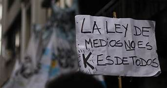

Principales Actores y Organizaciones
Gobierno y partidos políticos:
1. Presidenta Cristina Fernández de Kirchner
2. Partido Justicialista (PJ)
3. Frente para la Victoria (FpV)
4. Partido Socialista (PS)
Organizaciones sociales y sindicales:
1. Coalición por una Radiodifusión Democrática (CRD)
2. Asociación de Trabajadores de la Prensa (ATP)
3. Sindicato de Periodistas (SIPRE)
4. Federación Argentina de Trabajadores de Prensa (FATPREN)
5. Central de Trabajadores Argentinos (CTA)
Organizaciones de derechos humanos:
1. Asociación Madres de Plaza de Mayo
2. Abuelas de Plaza de Mayo
3. Centro de Estudios Legales y Sociales (CELS)
Medios de comunicación:
1. Televisión Pública Argentina (TPA)
2. Radio Nacional Argentina
3. Diario Página/12
4. Diario Tiempo Argentino
Intelectuales y personalidades:
1. Ernesto Sábato
2. Osvaldo Bayer
3. Eduardo Galeano
4. Adolfo Pérez Esquivel
Otros:
1. Asociación de Radiodifusores Argentinos (ARA)
2. Federación Argentina de Radiodifusores (FAR)
3. Asociación de Televisoras Argentinas (ATA)
Estos actores y organizaciones apoyaron la ley porque consideraban que:
1. Promovía la diversidad y pluralidad en los medios.
2. Regulaba la concentración de la propiedad de los medios.
3. Protegía la libertad de expresión y la independencia de los periodistas.
4. Fomentaba la participación ciudadana en la comunicación.
Es importante destacar que la Ley de Medios fue un tema controvertido y hubo también opositores significativos.